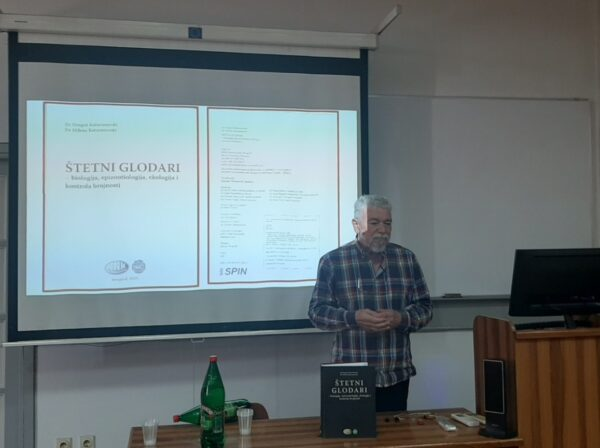
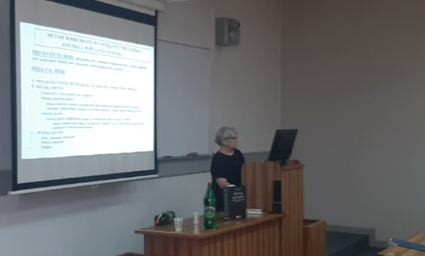
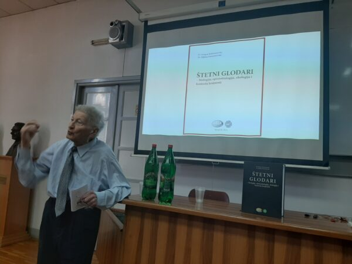
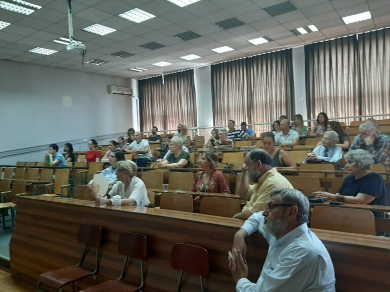
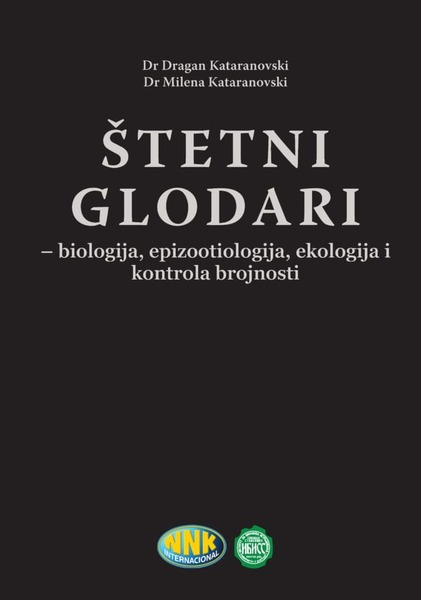

Pozivamo vas na predavanje “Structure-activity relationship studies on tick salivary proteins” koje će održati gošća Grupe za medicinsku entomologiju IMI, Dr. Ingrid Dijkgraaf sa Univerziteta u Mastrihtu, Holandija. Predavanje će se održati 02/11/2022., sa početkom u 13h, u predavaonici Katedre za mikrobiologiju Fakulteta veterinarske medicine (I sprat hodnik levo).
Poštovani,
Zadovoljstvo nam je da Vas obavestimo da će Međunarodni kongres 54. Dani preventivne medicine biti
održan 27-30. septembra 2022. godine u Nišu u organizaciji Instituta za javno zdravlje Niš,
Medicinskog fakulteta Univerziteta u Nišu i gradske podružnice Srpskog lekarskog društva Niš.
U prilogu Vam šaljemo Drugi poziv koji je dostupan i na sajtu Instituta za javno zdravlje Niš
(www.izjz-nis.org.rs).
Poslednji rok za slanje abstrakta (na sprskom i engleskom jeziku) je 9.9.2022.godine.
Za sve detaljnije informacije stojimo Vam na raspolaganju.
Srdačan pozdrav,
Organizacioni odbor 54. Dana preventivne medicine
Naučni odbor 54. Dana preventivne medicine
Stručni sastanak Društva, XXV po redu, održan je 07/07/2022. godine, kojom prilikom su predstavljeni radovi nagradjeni Godišnjom nagradom DPS za 2020. god. i održana promocija monografjije “Štetni glodari: biologija, epizootiologija, ekologija i kontrola brojnosti” autora Dragana i Milene Kataranovski, čiji su izdavači preduzeće NNK i Institut za biološka istraživanja “Siniša Stanković” – Institut od nacionalnog značaja za R Srbiju (IBISS). Monografiju su veoma pohvalnim recima predstavili recenzenti dr Ivo Savić, redovni profesor Biološkog fakulteta Univerziteta u Beogradu (u penziji), dr Vitomir Ćupić, redovni profesor Fakulteta veterinarske medicine UB, i dr Ivana Mirkov, n. sav. IBISS-a, a ispred izdavača, n. sav dr Mirjana Mihailović, direktor IBISS-a. Svi recenzenti su bili jednoglasni u oceni da se radi o kapitalnom, enciklopedijskom delu naše stučne literature, koje osim nespornog akademskog značaja može imati i značajnu ulogu u praksi, kao vodič za suzbijanje štetnih vrsta glodara u našoj sredini.
   Monografija je dostupna kod izdavača (NNK, direktor g. Miro Damjanović). Zainteresovani se mogu javiti na e-mail: i.p.nnki@eunet.rs.
Objavljen je poziv za stipendije WFP za učešće na ICOPA2022 u Kopenhagenu. Formular za prijavu možete preuzeti ovde, a tekst poziva sledi:
Dear Executive Board and Presidents,
On behalf of Professor Chai, president of the WFP, we would be pleased if you could inform your
members of the following opportunity:
The WFP is pleased to announce a select number of scholarships (covering full expenses or virtual
conference attendance) to support delegates of ICOPA2022. For those interested please download the
brief application form attached.
If successful:
Once completed please send the form via e-mail to WFP Executive Secretary, David Piedrafita: david.piedrafita@federation.edu.au
Important date: Applications open until 23rd July 2022; successful recipients will be notified by e-mail by July 26th, 2022.
Please also find the WFP webpage with details and application form:
https://www.wfpnet
.org/icopa/wfp-scholarships/
David Piedrafita | Professor
Federation University
Executive Secretary, World Federation of Parasitologists ( http://www.wfpnet.org/)
Fellow of the Australian Society for Parasitology (https://www.parasite.org.au/)
Čestitamo dobitnicima i želimo uspešno predstavljanje na kongresu!
Poziv članovima DPS za prijavu za grant za učešće na kongresu ICOPA XV (Kopenhagen, 21-26.08.2022.)
Članovi DPS koji žele da učestvuju na XV međunarodnom kongresu parazitologije ICOPA 2022 u Kopenhagenu (21-26. avgusta) moći će da se prijave za finansijsku pomoć Društva. Biće dodeljeno do tri granta za kotizacije za mlade odn. studente doktorskih studija i mlade doktore nauka (do 4 godine nakon doktorata) i do dva granta za kotizacije za starije (u iznosu od 225 odn. 350 €, u zavisnosti od kategorije). Apstrakte koji budu prijavljeni na kongres i prihvaćeni, kandidati će slati i DPS-u radi ocene od strane Predsedništva. U slučaju više kandidata, prednost će imati kandidati koji budu dobili usmenu prezentaciju.
S obzirom na to da je rok za prijavu apstrakata za kongres 8. mart, a odluka o prihvatanju se očekuje 3. maja, zainteresovani članovi Društva mogu poslati svoje aplikacije za grant DPS-a do 9. maja 2022, na iklun@imi.bg.ac.rs (priložiti kratak CV, kratko motivaciono pismo i već prijavljeni apstrakt). Predsedništvo će odlučivati po aplikacijama do 16. maja, tako da dobitnicima ostane dovoljno vremena da do isteka roka za early-bird registraciju obave tehničke poslove (dobiju sredstva od DPS i plate kotizaciju).
Veliki uspeh naših članova! Članovi DPS na projektima Horizon 2020 i Horizon Europe programa EU
Sa zadovoljstvom objavljujemo da je upravo (01.01.2022.) započeta realizacija projekta iz IMI2-RIA Horizon 2020 programa pod nazivom “FACILITATE: Horizon FrAmework for ClInicaL trIal participants’ daTA reutilization for a fully Transparent and Ethical ecosystem”, a članovi projektnog tima su i dr Olgica Đurković-Đaković i dr Ivana Klun. Projekat je tzv. “horizontalni” (na korist svima u Health oblasti), jer za cilj ima stvaranje pravnog, etičkog i informatičnog okvira za nesmetanu re-upotrebu postojećih kliničkih podataka iz prethodnih istraživanja i u druge svrhe, a na korist pacijenata čiji se podaci koriste. Budžet projekta je 6,9 M €, od čega EU doprinosi 3,2 M €, a traje do 31.12.2025.
Sa ponosom objavljujemo da je projekat iz Health-RIA Horizon Europe programa pod nazivom “CLIMOS: Climate Monitoring and Decision Support Framework for Sand Fly-borne Diseases Detection and Mitigation with COst-benefit and Climate-policy MeasureS” upravo odobren za finasiranje. Početak realizacije se očekuje na leto 2022., a u pitanju je 3-godišnji klasični istraživački projekat čiji je budzet 9,7 M € . Idejni tvorac projekta je dr Suzana Blesić iz IMI UB, koja je i tehnički ko-koordinator. Tim IMI upotpunjuju dr Olgica Đurković-Đaković (sa Suzanom i identifikovala temu projekta), i dr Ivana Klun, koje su odgovorne za organizaciju istraživanja koja se odnose na Leishmania spp.
Ovo je veliki uspeh za našu nauku u celini, posebno što se radi o projektu iz Health programa u kome su srpski istraživači do sad imali najmanje uspeha, a naročito za naše Društvo!
Uspeh članova i saradnika DPS na projektu programa Fonda za nauku IDEJE
Naše koleginice parazitolozi-mikolozi prof. dr Valentina Arsić Arsenijević kao rukovodilac i prof. dr Suzana Otašević kao član tima ostvarile su veliki uspeh dobijanjem projekta “FungalCaseFinder: Prediction, prevention and patient’s participation in diagnosis of selected fungal infections (FI): an implementation of novel method for obtaining tissue specimens” na konkursu Fonda za nauku R Srbije.
Ovo je tim značajnije što je u pitanju jedini projekt iz naše ili nama srodne oblasti koji je dobio finansiranje u okviru visoko kompetitivnog poziva “IDEJE”.
Velike čestitke prof. Arsić Arsenijević a posebno našoj članici prof. Suzani Otašević!!! Želimo mnogo uspeha u radu na projektu!